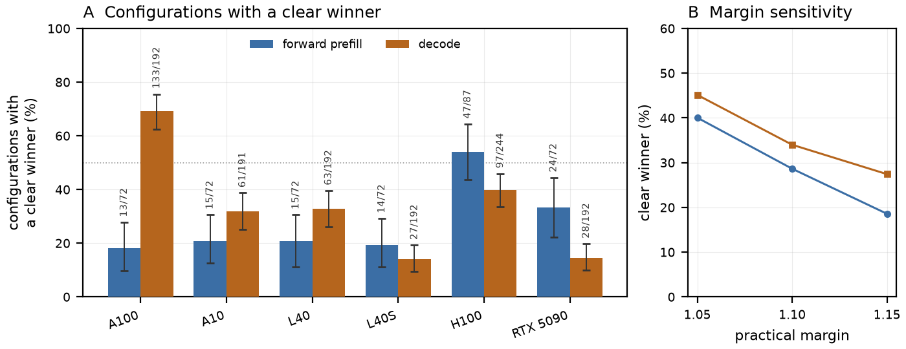
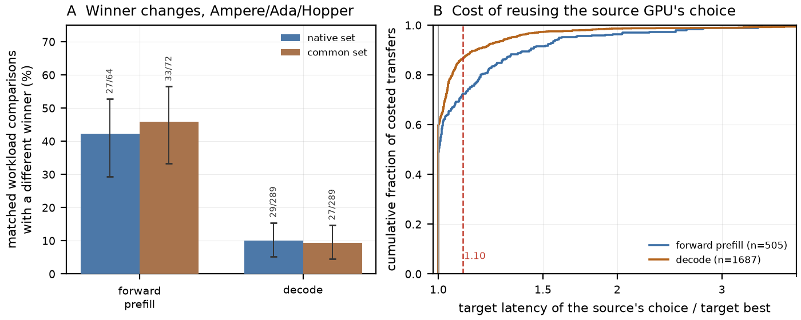

ML SYSTEMS · GPU INFERENCE
Attention Kernel Portability Across GPU Architectures
Measuring whether an attention backend chosen on one GPU stays a good choice on another, for forward prefill and single-token KV-cache decode, under one software build.
Contents
Overview
If you pick the fastest attention backend on one GPU, is it still the fastest on another GPU, and what does it cost if it is not? I measured this for forward prefill and single-token KV-cache decode on six NVIDIA GPUs covering Ampere, Ada, Hopper and Blackwell, all under one software build.
Most configurations did not have a clearly fastest backend. Only 128 of 447 prefill and 409 of 1203 decode configurations had a winner that was at least 10% ahead of second place and statistically separated from it. Among those, the winner changed between GPUs in 27 of 64 prefill comparisons but only 29 of 289 decode comparisons. Across all GPU pairs, reusing the source GPU’s choice usually cost almost nothing (median 1.002x prefill, 1.000x decode). The tail was worse, at 1.61x for prefill and 1.32x for decode at the 95th percentile.
Experimental setup
| GPU | Architecture | CC | SMs | Memory (GB) | L2 (MB) | Bandwidth (GB/s) | Repeats |
|---|---|---|---|---|---|---|---|
| A100 | Ampere | sm80 | 108 | 85.1 | 41.9 | 1733 | 5 |
| A10 | Ampere | sm86 | 72 | 23.7 | 6.3 | 483 | 5 |
| L40 | Ada | sm89 | 142 | 47.7 | 100.7 | 644 | 2 |
| L40S | Ada | sm89 | 142 | 47.7 | 100.7 | 644 | 5 |
| H100 | Hopper | sm90 | 132 | 85.0 | 52.4 | 2980 | 5 |
| RTX 5090 | Blackwell | sm120 | 170 | 33.7 | 100.7 | 1518 | 5 |
Prefill covers batch 1, 4, 16 and sequence lengths 256, 512, 1,024, 2,048, 4,096, 8,192. Decode appends one token to a KV cache of length 512, 1,024, 2,048, 4,096, 8,192, 16,384 at batch 1, 8, 32, 64. The full grid also varies dtype (bf16 and fp16), head dimension (64 and 128), causal masking and, for decode, eager execution against CUDA Graphs. The figures below show a bf16, head dimension 128 slice. I measured 16 implementation variants from seven backend families.
Winner and transfer cost
A configuration has a winner only if the second-fastest backend is at least 10% slower and the lower bound of a 95% bootstrap interval on that ratio is above 1. With the median latency on GPU , configuration and backend , and the fastest and second-fastest backends,
Failing this test means the gap was too small or too noisy to call. It does not mean the backends are equally fast.
The transfer cost is the target GPU’s time for the source GPU’s pick divided by the fastest time measured on the target.
A value of 1.20 means the transferred choice is 20% slower than the best option on the target. When the source’s pick could not run on the target, I counted the case separately instead of giving it a ratio.
Main results

Only 28.6% of prefill and 34.0% of decode configurations have a clear winner. No GPU reaches half in both regimes.

Across the Ampere, Ada and Hopper GPUs, the prefill winner changed in 27 of 64 comparisons (42%) and the decode winner in 29 of 289 (10%).
Across all GPU pairs, the median cost of reusing a choice is close to 1x, but 5% of prefill transfers cost 1.61x or more. In 85 of 590 prefill and 287 of 1974 decode cases the chosen backend could not run on the target GPU at all.
Prefill
On H100 at N=8,192, FlashAttention-3 takes 3,311 us. cuDNN SDPA takes 3,663 us, Triton 4,510 us and FlashAttention-2 6,634 us. FlashAttention-3 leads by 10.6%, just past the 10% threshold.
At N=256 the order flips. cuDNN SDPA takes 36.2 us against 84.13 us for FlashAttention-3.
On A10 at N=8,192, Triton (32,160 us) and cuDNN SDPA (32,270 us) are within 1% of each other, so neither counts as the winner.
The unfused PyTorch reference is limited by memory. On H100 at N=4,096 it uses 21,070 MB against 706 MB for FlashAttention-2, because it stores the full score matrix.
The largest speedup is cuDNN SDPA on L40S at batch 1, N=256, at 2.31x. In absolute terms that saves only 71.23 us per call.
FlashAttention-3 reaches 2.48x on H100 at batch 1, N=2,048. It runs only on H100 because the build rejects every other architecture in the set, so 3,204 of its 3,999 attempts were unsupported.
Decode
Decode does little arithmetic and reads the whole KV cache, so I report it in bytes. The KV footprint for one decode step is
where is batch, the number of KV heads, the KV length, the head dimension and the bytes per element. The factor 2 counts K and V. Effective bandwidth is this byte count divided by measured time. It is a model and was not read from a profiler.
Decode was measured with and without CUDA Graphs. The figures use eager execution, and every comparison uses the same mode on both GPUs.
Loading measurements…
At batch 1 on H100 the FlashAttention KV-cache kernel barely changes with cache length. It goes from 102.1 us at N=512 to 103.8 us at N=16,384, so fixed overhead dominates.
At batch 1, FlashInfer is fastest at N=512 (78.13 us) but reaches 859.7 us at N=16,384, which is 8.3 times the FlashAttention latency. The best decode backend on one GPU depends on context length.
At batch 32 and N=16,384 on H100, FlashAttention takes 863.7 us and reaches 2,486 GB/s of modelled KV traffic. That is 83% of the measured copy bandwidth.
- Each cell shows the implementation with the lowest median latency at that batch and KV length. 3 implementations (D2-sdpa, D3-fa-kvcache, D4-flashinfer) win at least one of the 144 cells. Only 34.0% of the full decode grid has a clear winner, so a colour change between neighbouring cells is often not a real difference. Hover a cell for its latency.
Fewer KV heads did not speed up every backend. At batch 1, N=16,384 on H100, going from 32 to 8 KV heads cuts the cache from 268 MB to 67 MB. FlashAttention improves from 129.5 to 103.8 us, SDPA stays about the same (135.9 to 142.3 us), and FlashInfer gets slower (280.3 to 859.7 us).
Limitations
- Each GPU was measured on a different host, so hardware effects are mixed with host effects.
- The dispatch probe covered 66.5% of timed runs. For the rest, I cannot confirm which kernel actually ran.
- No profiler counters were collected, so bandwidth numbers come from the byte model.
- FlashInfer page size equals the KV length in every decode run, so the FlashInfer and FlashAttention comparison is between libraries and says nothing about paged against contiguous layouts.
- Results hold for torch 2.9.0+cu128, CUDA 12.8, Triton 3.5.0, flash-attn 2.8.3 and FlashInfer 0.6.18. Other versions may rank differently.
Reproduce
The raw measurements are in release v1.2 with checksums. These commands rebuild everything on this page from them.
python -m akp.analysis ../akp-measurements-v1/raw --out results/processed
python paper/ledger.py
python -m akp.figures_portability results/processed --out site/public/figures
python -m akp.webdata results/processed site/public/data/web.jsonSupplementary material
Show diagnostics
Run outcomes
Every attempt ends in one of five states. OK is a clean timed run. UNSUPPORTED means the library rejected the configuration. OOM_PREDICTED means the run was skipped because it would not fit in memory. OOM means it ran out of memory anyway. ERROR means it crashed at run time, and all 950 of these are FlashInfer on the RTX 5090.
| Implementation | OK | UNSUPPORTED | OOM_PREDICTED | OOM | ERROR | Clean (%) |
|---|---|---|---|---|---|---|
D0-naive-kv | 5,530 | 0 | 0 | 10 | 0 | 99.8 |
D1-inductor | 194 | 5,346 | 0 | 0 | 0 | 3.5 |
D2-sdpa | 5,535 | 0 | 0 | 5 | 0 | 99.9 |
D3-fa-kvcache | 5,515 | 0 | 0 | 25 | 0 | 99.5 |
D4-flashinfer | 4,565 | 0 | 0 | 25 | 950 | 82.4 |
D6-fa-prefill-at-1 | 5,515 | 0 | 0 | 25 | 0 | 99.5 |
P0-naive | 3,148 | 0 | 790 | 61 | 0 | 78.7 |
P1-inductor | 3,209 | 0 | 790 | 0 | 0 | 80.2 |
P1-inductor-nofuse | 121 | 3,873 | 5 | 0 | 0 | 3.0 |
P1-inductor-where | 121 | 3,873 | 5 | 0 | 0 | 3.0 |
P2b-sdpa-mem-eff | 3,969 | 30 | 0 | 0 | 0 | 99.2 |
P2c-sdpa-flash | 3,999 | 0 | 0 | 0 | 0 | 100.0 |
P2d-sdpa-cudnn | 3,999 | 0 | 0 | 0 | 0 | 100.0 |
P3-triton | 3,999 | 0 | 0 | 0 | 0 | 100.0 |
P4-fa2 | 3,999 | 0 | 0 | 0 | 0 | 100.0 |
P4h-fa3 | 795 | 3,204 | 0 | 0 | 0 | 19.9 |
Dispatch checks
For each run I recorded which kernel actually executed. Among probed runs, 0.449% ran a different kernel than the one requested. 33.5% of runs were not probed, mostly on the library paths. P4-fa2 has 3,067 unprobed runs and 932 confirmed as flash-attn.
| Implementation | Observed kernels (runs) | Unprobed runs |
|---|---|---|
D0-naive-kv | unfused-gemm 5,509, unknown 21 | 0 |
D1-inductor | triton 187 | 7 |
D2-sdpa | pytorch-flash 4,525 | 1,010 |
D3-fa-kvcache | flash-attn 4,516 | 999 |
D4-flashinfer | flashinfer 3,489 | 1,076 |
D6-fa-prefill-at-1 | flash-attn 4,531 | 984 |
P0-naive | unfused-gemm 2,792, unknown 41 | 315 |
P1-inductor | pytorch-flash 30, triton 2,047, unfused-gemm 4, unknown 32 | 1,096 |
P1-inductor-nofuse | triton 88 | 33 |
P1-inductor-where | pytorch-flash 15, triton 73 | 33 |
P2b-sdpa-mem-eff | cutlass-fmha 1,645, unknown 110 | 2,214 |
P2c-sdpa-flash | pytorch-flash 1,650 | 2,349 |
P2d-sdpa-cudnn | cudnn 1,988 | 2,011 |
P3-triton | triton 1,591 | 2,408 |
P4-fa2 | flash-attn 932 | 3,067 |
P4h-fa3 | flash-attn 238 | 557 |
| GPU | Runs probed (%) | Mismatch (%) |
|---|---|---|
| A100 | 67.3 | 0.077 |
| A10 | 56.3 | 0.285 |
| L40 | 56.5 | 0.462 |
| L40S | 80.9 | 0.333 |
| H100 | 75.8 | 0.821 |
| RTX 5090 | 52.5 | 0.599 |
TorchInductor’s attention-fusion counter read zero in all 3,645 runs where it was recorded, yet 45 profiled Inductor runs executed a flash-attention kernel. The counter alone is not a reliable signal of what ran.
Correctness
Every implementation was checked against the PyTorch reference on a sample of configurations, and none failed. Relative error is inflated where reference values are near zero, so absolute error and cosine similarity are the useful columns.
| Implementation | Checked runs | Max abs err | Max rel err | Min cosine | vs baseline | Failures |
|---|---|---|---|---|---|---|
D0-naive-kv | 355 | 0.007 | 474.4 | 1.000 | 1.000 | 0 |
D1-inductor | 50 | 0.001 | 0.015 | 1.000 | 0.484 | 0 |
D2-sdpa | 360 | 0.001 | 220.8 | 1.000 | 0.739 | 0 |
D3-fa-kvcache | 360 | 0.001 | 220.8 | 1.000 | 0.739 | 0 |
D4-flashinfer | 320 | 0.001 | 0.084 | 1.000 | 0.599 | 0 |
D6-fa-prefill-at-1 | 360 | 0.001 | 220.8 | 1.000 | 0.739 | 0 |
P0-naive | 415 | 0.025 | 3,204 | 1.000 | 1.000 | 0 |
P1-inductor | 415 | 0.020 | 2,517 | 1.000 | 1.081 | 0 |
P1-inductor-nofuse | 49 | 0.020 | 1,571 | 1.000 | 1.069 | 0 |
P1-inductor-where | 49 | 0.020 | 1,571 | 1.000 | 1.069 | 0 |
P2b-sdpa-mem-eff | 405 | 0.012 | 2,060 | 1.000 | 0.775 | 0 |
P2c-sdpa-flash | 415 | 0.012 | 2,060 | 1.000 | 0.775 | 0 |
P2d-sdpa-cudnn | 415 | 0.012 | 2,060 | 1.000 | 0.775 | 0 |
P3-triton | 415 | 0.012 | 2,060 | 1.000 | 0.775 | 0 |
P4-fa2 | 415 | 0.012 | 2,060 | 1.000 | 0.775 | 0 |
P4h-fa3 | 65 | 0.011 | 793 | 1.000 | 0.664 | 0 |
Code sources
I wrote the PyTorch reference (P0-naive, D0-naive-kv), its torch.compile variants (P1-inductor*, D1-inductor) and the SDPA call sites that force one backend each (P2b, P2c, P2d, D2-sdpa). P3-triton is the Triton tutorial kernel with a small BF16 change. P4-fa2, P4h-fa3, D3-fa-kvcache, D6-fa-prefill-at-1 and D4-flashinfer call the unmodified flash-attn 2.8.3 and FlashInfer 0.6.18 libraries.
Prefill8 device pairs over 6 GPUs
Decode15 device pairs over 6 GPUs
The number at the end of each bar is how many configurations the rate uses. Pairs with fewer than 5 separated configurations are not drawn.
Counting all configurations makes decode look as unstable as prefill. A100 against L40 changes winner in 53.6% of 192 configurations, but in only 2.9% of the 35 with a clear winner.
Individual pairs get small once the rule is applied. A100 against H100 prefill keeps only 4 of 72 configurations, and L40 against L40S keeps 8. Pairs with a handful of separated configurations should not be read as rates.
| Regime | Pair | Configs | Change, all (%) | Separated | Change, separated (%) |
|---|---|---|---|---|---|
| decode | A100 vs A10 | 191 | 41.9 | 40 | 5.0 |
| decode | A100 vs L40 | 192 | 53.6 | 35 | 2.9 |
| decode | A100 vs L40S | 192 | 68.8 | 15 | 6.7 |
| decode | A100 vs H100 | 192 | 26.6 | 63 | 12.7 |
| decode | A100 vs RTX 5090 | 192 | 71.4 | 18 | 66.7 |
| decode | A10 vs L40 | 191 | 48.2 | 36 | 0.0 |
| decode | A10 vs L40S | 191 | 65.4 | 15 | 0.0 |
| decode | A10 vs H100 | 191 | 49.7 | 20 | 20.0 |
| decode | A10 vs RTX 5090 | 191 | 89.0 | 19 | 63.2 |
| decode | L40 vs L40S | 192 | 32.3 | 23 | 4.3 |
| decode | L40 vs H100 | 192 | 63.5 | 27 | 33.3 |
| decode | L40 vs RTX 5090 | 192 | 82.8 | 25 | 72.0 |
| decode | L40S vs H100 | 192 | 70.8 | 15 | 20.0 |
| decode | L40S vs RTX 5090 | 192 | 78.6 | 9 | 88.9 |
| decode | H100 vs RTX 5090 | 192 | 70.3 | 14 | 92.9 |
| prefill | A100 vs A10 | 72 | 72.2 | 7 | 14.3 |
| prefill | A100 vs L40 | 72 | 65.3 | 7 | 0.0 |
| prefill | A100 vs L40S | 72 | 77.8 | 1 | 100.0 |
| prefill | A100 vs H100 | 72 | 87.5 | 4 | 100.0 |
| prefill | A100 vs RTX 5090 | 72 | 51.4 | 3 | 66.7 |
| prefill | A10 vs L40 | 72 | 41.7 | 5 | 0.0 |
| prefill | A10 vs L40S | 72 | 50.0 | 2 | 50.0 |
| prefill | A10 vs H100 | 72 | 65.3 | 10 | 30.0 |
| prefill | A10 vs RTX 5090 | 72 | 61.1 | 4 | 25.0 |
| prefill | L40 vs L40S | 72 | 43.1 | 8 | 12.5 |
| prefill | L40 vs H100 | 72 | 86.1 | 8 | 100.0 |
| prefill | L40 vs RTX 5090 | 72 | 69.4 | 4 | 75.0 |
| prefill | L40S vs H100 | 72 | 70.8 | 12 | 66.7 |
| prefill | L40S vs RTX 5090 | 72 | 72.2 | 2 | 100.0 |
| prefill | H100 vs RTX 5090 | 72 | 75.0 | 17 | 47.1 |